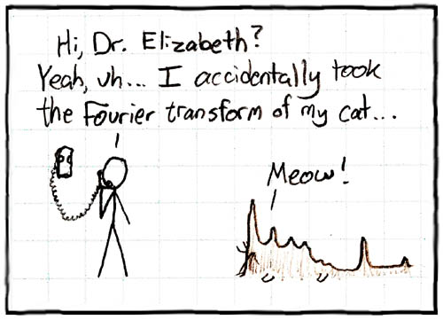

38:10 · 7 OPERE
La prospettiva culturale.
Il filo del discorso
La cultura viene proposta come possibilità di resistere alle realtà imposte e, insieme, di coltivare uno spazio interiore. La biblioteca in rovina della Macchina del tempo e una vignetta matematica di xkcd introducono due immagini complementari: la perdita delle capacità di leggere e il piacere di riconoscere un linguaggio condiviso. Il relatore passa dalla trasmissione dei testi alle tradizioni ebraiche sui giusti e sui bambini, per poi contrapporre curiosità e meraviglia alla chiusura dell’io. Una definizione di cultura letta senza rivelarne l’autore alimenta la difesa di un interesse che non coincida con l’utilità personale. La discussione approda alla poesia, alla differenza fra esercizio privato e opera capace di comunicare e al ruolo del giudizio critico. Aneddoti sui premi e polemiche contro l’autorevolezza editoriale mostrano anche quanto sia difficile distinguere il valore di un testo dal prestigio di chi lo firma. Il caso della biografia di Einstein di Walter Isaacson serve al relatore per chiedere lettori capaci di scegliere e dissentire. La conclusione rivendica una cultura autorevole senza obbedienza autoritaria. La scheda conserva il carattere personale e polemico del discorso e separa i riferimenti riscontrati dalle citazioni anonime e dalle accuse prive di documentazione.
I libri nel discorso

La macchina del tempo
Copertina: Feltrinelli · Universale Economica, I classici
Wells e La macchina del tempo espliciti; episodio dei libri decaduti.
Passaggio 0:46 ↗ · Fonti e libro ↗
Fourier (xkcd n. 26)
Vignetta originale: Fourier: Riproduzione integrale della vignetta originale Fourier, numero 26 del webcomic xkcd; non è la copertina di un libro.
Vignetta in bianco e nero dalla pagina xkcd 26: una telefonata descrive la trasformazione accidentale del gatto. L’immagine è un fumetto, non una copertina editoriale. Credito Randall Munroe, xkcd; licenza indicata dal sito CC BY-NC 2.5,https://creativecommons.org/licenses/by-nc/2.5/.
Vignetta descritta con dottoressa Elizabeth e trasformata di Fourier del gatto: corrispondenza puntuale con xkcd 26.
Passaggio 3:04 ↗ · Fonti e libro ↗
Che cosa significa pensare?
Copertina: SugarCo · Tasco · edizione di riferimento
Heidegger e Was heißt Denken / Che cosa significa pensare espliciti.
Passaggio 7:40 ↗ · Fonti e libro ↗
Bibbia
Copertina: San Paolo, 2014 · Nuova Versione dai Testi Antichi · edizione di riferimento
Invito di Gesù a lasciar venire i bambini: episodio evangelico riconoscibile.
Passaggio 10:17 ↗ · Fonti e libro ↗
Antigone
Identificazione probabile
Copertina: Einaudi · Collezione di teatro · edizione di riferimento
Immagine associata all’ISBN di riferimento e controllata visivamente; edizione e traduzione non identificate come quelle citate o lette nel video.
Sofocle e formula polla ta deina riconoscibili; titolo probabile dall’ode corale dell’Antigone.
Passaggio 11:40 ↗ · Fonti e libro ↗
Einstein: His Life and Universe
Copertina: Simon & Schuster, trade paperback, 13 maggio 2008, 704 pagine. Immagine corrente distribuita dall’editore per l’ISBN 9780743264747.
Copertina autentica con ritratto di Einstein, titolo dorato, sottotitolo bianco e fascia rossa con Walter Isaacson. L’immagine corrente richiama anche Steve Jobs fra le opere dell’autore: non si assume che ogni elemento grafico appartenesse alla prima tiratura del 2008. Non è identificata una precisa lingua o edizione nel filmato.
Biografia di Einstein esplicita; autore poi nominato Isaacson a circa 2085 secondi.
Passaggio 32:49 ↗ · Fonti e libro ↗
Steve Jobs
Copertina: Immagine dell’edizione francese JC Lattès, 26 ottobre 2011, 668 pagine, ISBN 9782709638326. Opera originale inglese: Simon & Schuster, 24 ottobre 2011, 656 pagine, ISBN 9781451648539.
Copertina autentica JC Lattès con ritratto di Steve Jobs in bianco e nero, mano al mento, autore in alto e marchio editoriale in basso. La copertina è dell’edizione francese, dichiarata; l’ISBN inglese non viene attribuito a questa immagine. Il filmato non certifica una specifica edizione mostrata.
Biografia di Steve Jobs nominata per identificare Walter Isaacson.
Passaggio 34:45 ↗ · Fonti e libro ↗